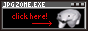
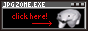
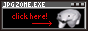

Buttons for cool websites
Here are a few buttons I've found while surfing the world wide webs.


 

And here is a button I made for my site. Look at that it says jan Awa and is an UwU isn't that delightful.

This page is for documenting things I like and recommend, such as youtube videos, browser extensions, and some cool websites.
I love watching youtube. Go to my Video Recommendation Log™ to see a number of youtube videos I like and recommend you watch.
It's difficult to decide which fonts I like the most
, because different fonts are pretty in different ways. San Francisco Pro (the apple font) and Jetbrains Mono are both very aesthetically pleasing to me. Inter and IBM plex sans are also pretty in similar ways.
Afterglow and Domaine Display are both very nice looking serif typefaces, as well as Bookman.
Input Sans is my favorite font for coding (except for my custom font), mostly because it's proportional. It's designed to keep all the benefits of typical monospaced fonts, like the clear punctuation and high letter differentiation (e.g. I/l), while avoiding the flaws like bad kerning (e.g. the spacing in LT
), and a squished lowercase m.
Here are a few sites I've found while surfing the world wide webs.
Da Jpeg Zone - Really nice layout and listen to that music!!
Really Really Bored - So many cool secrets! Don't click the duck though.
Pollygon - Beautiful website with a bunch of stuff.
Don't worry, this list will grow.
Here are a few buttons I've found while surfing the world wide webs.

And here is a button I made for my site. Look at that it says jan Awa and is an UwU isn't that delightful.
I don't know of too many browser extensions, but the ones I do know are good, and you should probably install them. Also, you should use the Zen browser. It's basically Firefox but it looks cooler and has some nice features.
Ublock Origin - The best adblocker I think. If you don't have adblock for youtube, is it really worth it to still watch youtube? (no)
Dark reader - Not good for some websites, but ouchie owie light mode
Grepper - It makes centering divs much easier
DeArrow - This makes youtube thumbnails and titles user submitted to prevent clickbait. I like it.
Sponsorblock - Time is money and watching sponsored segments give creators money indirectly. But ew
FontFinder - You can select fonts and right click to see what they are. Good when you see a really sexy typeface
YT-shorts block - They're no fun, are they?